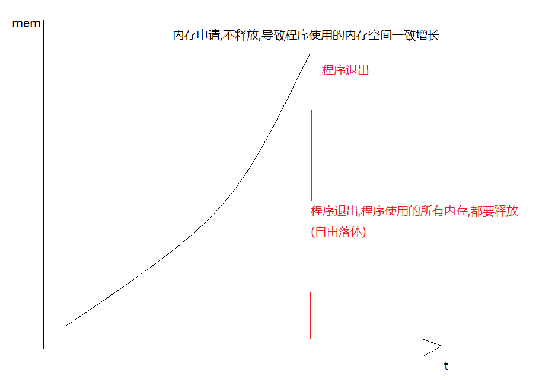

1 内存泄漏
只申请,不释放

内存污染: 向没有申请过的内存空间写入数据
2 返回变量的地址
只有普通局部变量的地址不可以返回,因为普通局部变量在所在的函数结束之后就被释放,
静态局部,全局,静态全局,这些变量,只要程序不退出.就不会释放,所以这些变量的地址是可以返回操作
int a = 10;
int * fun()
{
//int a = 10;
//static int a = 10;
a *= 10;
return &a;
}
int main()
{
int * p = fun();
*p = 2000;// p所指向的空间没有释放(静态局部变量),则可以操作这块内存,
//释放不可以操作(普通局部)
printf("%d\n",*p);
system("pause");
return 0;
}
3 返回堆区的地址
堆区的地址是可以被返回,只要没有释放
char *fun4()
{
char *q = malloc(100);
return q;//ok 堆区的地址是可以返回的,堆区函数结束不会被释放
}
int main()
{
char *p = fun4();
//p = "hello";
strcpy(p,"hello");
free(p);//err p并没有指向堆区,而是指向文字常量区"hello"
system("pause");
return 0;
}

4 通过函数的值传递,不能改变实参的值
1
 5 传实参的地址,可以在调用函数改变实参的值
5 传实参的地址,可以在调用函数改变实参的值2

注意: 能不能返回这个地址,需要看这个地址所指向的空间有没有被释放:
6结构体( 复合类型)
结构体: 将多个相同或不同类型的数据存在在一块连续的内存空间中
7 结构体的定义和初始化
#define _CRT_SECURE_NO_WARNINGS
#include<stdio.h>
#include<string.h>
#include<stdlib.h>
//定义一个结构体数据类型
//关键字 struct 代表这个是一个结构体类型,
//stu 是这个结构的名字
//整个结构体的类型是 struct stu
// 结构体类型struct stu {}中是结构体的成员,一个有3个成员,每个成员的类型可以是
//任意的类型
//定义结构体类型时,{}后面记得加分号
//注意定义结构struct stu,它只是一个类型,一个模板,没有空间,不可以给结构体成员赋值
struct stu
{
int id ;
int age;
char name[128];
} a;//定义类型时,同时定义了两个结构体变量struct stu a;
struct stu c;
int main()
{
//struct stu d = {1,20,"ubunqu"};
//struct stu d = { .age=20 };//给部分成员初始化,其他成员内容为0
struct stu d;
//如何给结构体成员赋值(如何操作结构体成员)
//如果通过结构体变量操作结构体成员,使用点域.操作
/*d.id = 2;
d.age = 20;
strcpy(d.name , "world");
printf("%d %d %s\n",d.id,d.age,d.name);*/
//如果通过结构体的地址操作结构体成员,使用->
(&d)->id = 3;
(&d)->age = 20;
strcpy((&d)->name, "world");
printf("%d %d %s\n", (&d)->id,(&d)->age,(&d)->name);
system("pause");
return 0;
}
8 结构体数组
是一个数组,数组的每一个元素都是结构体
int main()
{
//定义一个结构体数组,结构体数组有5个元素,每个元素是struct stu 类型
struct stu num[5] = { {1,20,"lucy"},{2,21,"bob"},{3,22,"peter"},
{4,25,"maker"},{5,26,"ubunqu"} };
for(int i=0;i<sizeof(num)/sizeof(num[0]);i++)
{
printf("%d %d %s\n",num[i].id,num[i].age,num[i].name);
}
system("pause");
return 0;
}
9 结构体套结构体
struct stu
{
int id ;
int age;
char name[128];
} ;//定义类型时,同时定义了两个结构体变量struct stu a;
struct heima_stu
{
/*int id;
int age;
char name[128];*/
struct stu s;
char subject[128];
};
int main()
{
struct heima_stu heima;
heima.s.id = 1;
heima.s.age = 22;
strcpy(heima.s.name,"ubunqu");
strcpy(heima.subject,"c++");
printf("%d %d %s %s\n",heima.s.id,heima.s.age,heima.s.name,heima.subject);
system("pause");
return 0;
}
10 结构体赋值
int main()
{
struct stu a = {1,34,"bob"};
struct stu b;
//1 memcpy
//memcpy_str( &b,&a);
//2
//b.id = a.id;
//b.age = a.age;
////b.name = a.name;//err
//strcpy(b.name,a.name);
//3
b = a;//ok 相同类型的变量是可以相互赋值
printf("%d %d %s\n",b.id,b.age,b.name);
system("pause");
return 0;
}
11 结构体指针

12 结构体套指针


12 结构体数组作为函数的形参
#define _CRT_SECURE_NO_WARNINGS
#include<stdio.h>
#include<string.h>
#include<stdlib.h>
struct c13
{
int id;
char name[128];
};
//void set_num(struct c13 num[5] )
void set_num(struct c13 *p,int n )
{
for (int i = 0; i < n; i++)
{
// (*(p + i)).id = i + 10;
p[i].id = i + 10;
//(p + i)->id = i + 10;
char buf[128] = "";
sprintf(buf,"%d%d%d",i,i,i);
strcpy(p[i].name,buf);
}
}
int main()
{
struct c13 num[5];
memset(num,0,sizeof(num));
set_num(num,sizeof(num)/sizeof(num[0]));// num = &num[0]
for (int i = 0; i < sizeof(num) / sizeof(num[0]); i++)
{
printf("%d %s\n",num[i].id,num[i].name);
}
system("pause");
return 0;
}
13 const修饰的结构体指针变量
int main()
{
struct c13 a;
struct c13 b;
// struct c13 const *p = &a;
//p->id = 100; err const修饰的是*,不能通过指针p取修改p指向的那块空间
struct c13 * const p = &a;
//p = &b; const修饰的是指针变量p,不能修改p本身的内容(指向)
system("pause");
return 0;
}
14 共用体
多个变量共用同一块内存空间''同一时刻,只能有一个变量起作用
15 大小端

共用体验证大小端
#define _CRT_SECURE_NO_WARNINGS
#include<stdio.h>
#include<string.h>
#include<stdlib.h>
union abc
{
//char a;
short b;
char buf[2];
};
int main()
{
union abc tmp;
tmp.b = 0x0102;
if (tmp.buf[0] == 0x01)
{
printf("big\n");
}
else
{
printf("little\n");
}
system("pause");
return 0;
}
15 枚举
将枚举类型的变量的值一一列举出来,枚举变量的值只可以赋值为{}里面的值,{}里面的值是常量
枚举{}里面列举的常量的值默认是从0开始
#define _CRT_SECURE_NO_WARNINGS
#include<stdio.h>
#include<string.h>
#include<stdlib.h>
/*#define SUN 0
#define RAIN 1
#define SNOW 2 */
enum ab { SUN , RAIN, SNOW};
int main()
{
enum ab tmp = SNOW;
printf("%d %d %d\n",SUN,RAIN,SNOW);
int a = 0;
scanf("%d",&a);
if (SUN == a)
{
printf("sleep\n");
}
else if(RAIN == a)
{
printf("music\n");
}
else if (SNOW == a)
{
printf("game\n");
}
system("pause");
return 0;
}
15 typedef
typedef 是用来给类型取别名
typedef 原类型 新类型